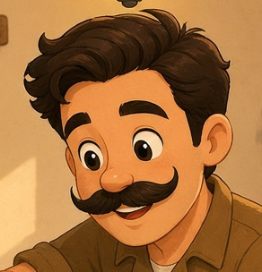

Neurodiversity awareness
What if a neurotypical person had to live a neurodiverse day?

Your radio starts at a random volume, and you have to guess it before you can even think. The grocery aisles move every week, and nobody gives you a map. People ask open questions like 'How are you?' with no options — but they want the long answer. Your boss says 'circle back,' and they mean today.
The bright hallway lights feel like a spotlight. Small talk has invisible rules, and you only learn them by getting it wrong. A deadline sounds soft… until suddenly it isn't. You rehearse a phone call three times, and you still freeze.
It's not bad. It's just different.
And different comes with huge advantages too.
I have super quick reflexes. I'm able to see many things what many people miss. I process things fast, and I catch inconsistencies others walk right past. I have the real talent to do stuff with my hands — paper craft, crochet, building things.
Whenever some door gets closed in front of me, I'm that kind who will be obsessed to look for another door to open. I cannot sit still and accept — some people call it fate. I solve whatever situation I'm in. That drive is mine, and I own it.


If people got hurt by me in the past, or ever do in the future, I apologize — honestly, not from guilt. Being neurodiverse is different, and it is good. Once you learn to control certain aspects, those traits become almost like superpowers.
The world is built for the neurotypical default, so simple tasks can become big obstacles. If this helps you understand a little better, I'd love to hear your thoughts.
Pepo Studios · pepostudios.au